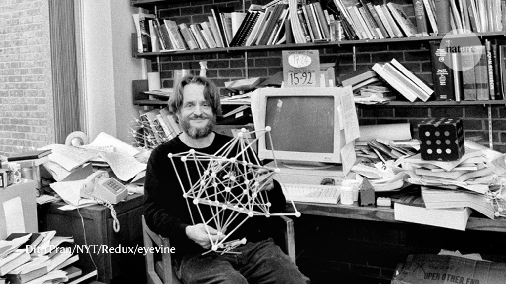
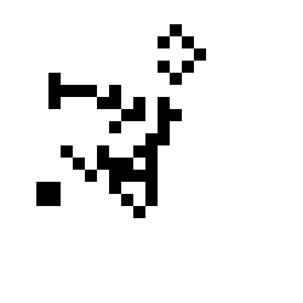
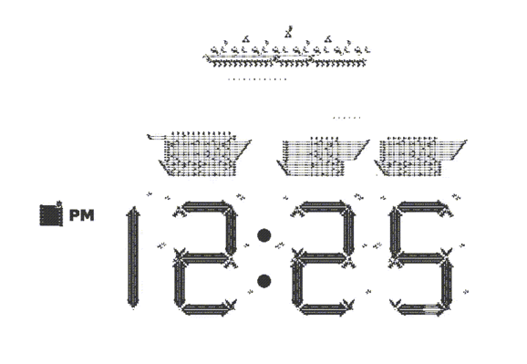
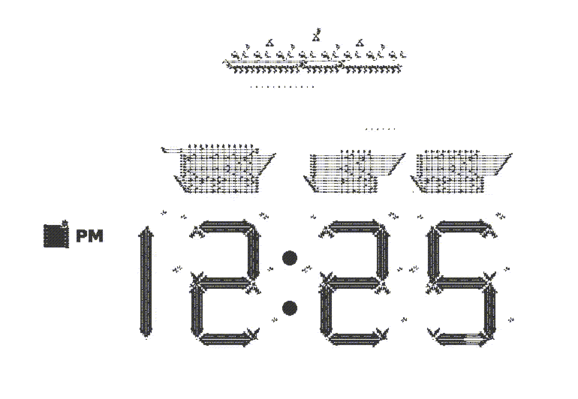
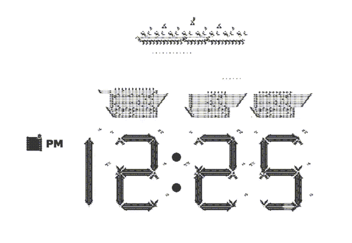

The Game of Life (sometimes known simply as Life) is an example of a cellular automaton and a zero-player game. It takes place on an infinite two-dimensional grid in which cells can be ‘on’ (alive) or ‘off’ (dead), and is defined by a set of rules that jointly determine the state of a cell given the state of its neighbours. Following specification of an initial configuration, patterns evolve over time across the grid requiring no further user input (thus ‘zero-player’). First popularized in 1970 in the Scientific American (Gardner, 1970), the Game of Life has attracted lasting appeal among both scientific and amateur communities. One reason for its appeal is that it is very simple to program, yet at the same time it appears to exemplify emergent and self-organized behaviour. Even though its (simple) rules are specified at the level of individual cells, one sees entities at coarse-grained ‘higher’ levels of description, whose behaviors are better described by rules at these higher levels.
Ինչ է կյանքի խաղը?
Կյանքի խաղը (երբեմն հայտնի է որպես Կյանք) բջջային ավտոմատի և զրոյական խաղացողի խաղի օրինակ է: Այն տեղի է ունենում անսահման երկչափ ցանցի վրա, որտեղ բջիջները կարող են լինել «միացված» (կենդանի) կամ «անջատված» (մեռած), և սահմանվում է մի շարք կանոններով, որոնք համատեղ որոշում են բջիջի վիճակը՝ հաշվի առնելով նրա վիճակը: հարեւաններ. Նախնական կոնֆիգուրացիայի ճշգրտումից հետո օրինաչափությունները ժամանակի ընթացքում զարգանում են ցանցի մեջ՝ չպահանջելով օգտվողի լրացուցիչ մուտքագրում (հետևաբար՝ «զրոյական խաղացող»): Առաջին անգամ տարածված 1970 թվականին Scientific American-ում (Gardner, 1970), «Կյանքի խաղը» կայուն գրավչություն է վայելում ինչպես գիտական, այնպես էլ սիրողական համայնքների շրջանում: Դրա գրավչության պատճառներից մեկն այն է, որ այն շատ պարզ է ծրագրավորվում, բայց միևնույն ժամանակ թվում է, որ այն ցույց է տալիս առաջացող և ինքնակազմակերպված վարքագիծը: Թեև դրա (պարզ) կանոնները հստակեցված են առանձին բջիջների մակարդակում, կարելի է տեսնել նկարագրության կոպիտ «ավելի բարձր» մակարդակներում գտնվող սուբյեկտներ, որոնց վարքագիծն ավելի լավ է նկարագրվում այս բարձր մակարդակների կանոններով:

Rules
The universe of the Game of Life is an infinite, two-dimensional orthogonal grid of square cells, each of which is in one of two possible states, live or dead, (or populated and unpopulated, respectively). Every cell interacts with its eight neighbours, which are the cells that are horizontally, vertically, or diagonally adjacent. At each step in time, the following transitions occur:
1.Any live cell with fewer than two live neighbours dies, as if by underpopulation.
2.Any live cell with two or three live neighbours lives on to the next generation.
3.Any live cell with more than three live neighbours dies, as if by overpopulation.
4.Any dead cell with exactly three live neighbours becomes a live cell, as if by reproduction.
These rules, which compare the behavior of the automaton to real life, can be condensed into the following:
1.Any live cell with two or three live neighbours survives.
2.Any dead cell with three live neighbours becomes a live cell.
3.All other live cells die in the next generation. Similarly, all other dead cells stay dead.
The initial pattern constitutes the seed of the system. The first generation is created by applying the above rules simultaneously to every cell in the seed, live or dead; births and deaths occur simultaneously, and the discrete moment at which this happens is sometimes called a tick. Each generation is a pure function of the preceding one. The rules continue to be applied repeatedly to create further generations.
Կանոնները
Կյանքի խաղի տիեզերքը քառակուսի բջիջների անսահման, երկչափ ուղղանկյուն ցանց է, որոնցից յուրաքանչյուրը գտնվում է երկու հնարավոր վիճակներից մեկում՝ կենդանի կամ մեռած, (կամ բնակեցված և չբնակեցված, համապատասխանաբար): Յուրաքանչյուր բջիջ փոխազդում է իր ութ հարեւանների հետ, որոնք այն բջիջներն են, որոնք գտնվում են հորիզոնական, ուղղահայաց կամ անկյունագծով: Ժամանակի յուրաքանչյուր քայլում տեղի են ունենում հետևյալ անցումները.
1. Ցանկացած կենդանի բջիջ, որն ունի ավելի քիչ, քան երկու կենդանի հարևան, մեռնում է, կարծես թերբնակեցման պատճառով:
2. Երկու կամ երեք կենդանի հարևաններով ցանկացած կենդանի բջիջ ապրում է մինչև հաջորդ սերունդ:
3. Երեքից ավելի կենդանի հարևաններով ցանկացած կենդանի բջիջ մեռնում է, ասես գերբնակեցման պատճառով:
4. Ցանկացած մեռած բջիջ, որն ունի ուղիղ երեք կենդանի հարևան, վերածվում է կենդանի բջիջի, կարծես վերարտադրության միջոցով:
Այս կանոնները, որոնք համեմատում են ավտոմատի վարքը իրական կյանքի հետ, կարելի է խտացնել հետևյալի մեջ.
1. Երկու կամ երեք կենդանի հարևաններով ցանկացած կենդանի բջիջ գոյատևում է:
2. Երեք կենդանի հարևաններով ցանկացած մեռած բջիջ դառնում է կենդանի բջիջ:
3. Բոլոր մյուս կենդանի բջիջները մահանում են հաջորդ սերնդում: Նմանապես, մնացած բոլոր մեռած բջիջները մեռած են մնում
Նախնական օրինաչափությունը կազմում է համակարգի սերմը: Առաջին սերունդը ստեղծվում է վերը նշված կանոնները միաժամանակ կիրառելով սերմի յուրաքանչյուր բջիջի վրա՝ կենդանի կամ մեռած. ծնունդներն ու մահերը տեղի են ունենում միաժամանակ, և այն դիսկրետ պահը, երբ դա տեղի է ունենում, երբեմն կոչվում է տիզ: Յուրաքանչյուր սերունդ նախորդի մաքուր գործառույթն է: Կանոնները շարունակում են բազմիցս կիրառվել հետագա սերունդներ ստեղծելու համար:


Useful links և videos / Օգտակար հղումներ և տեսանյութեր

 
